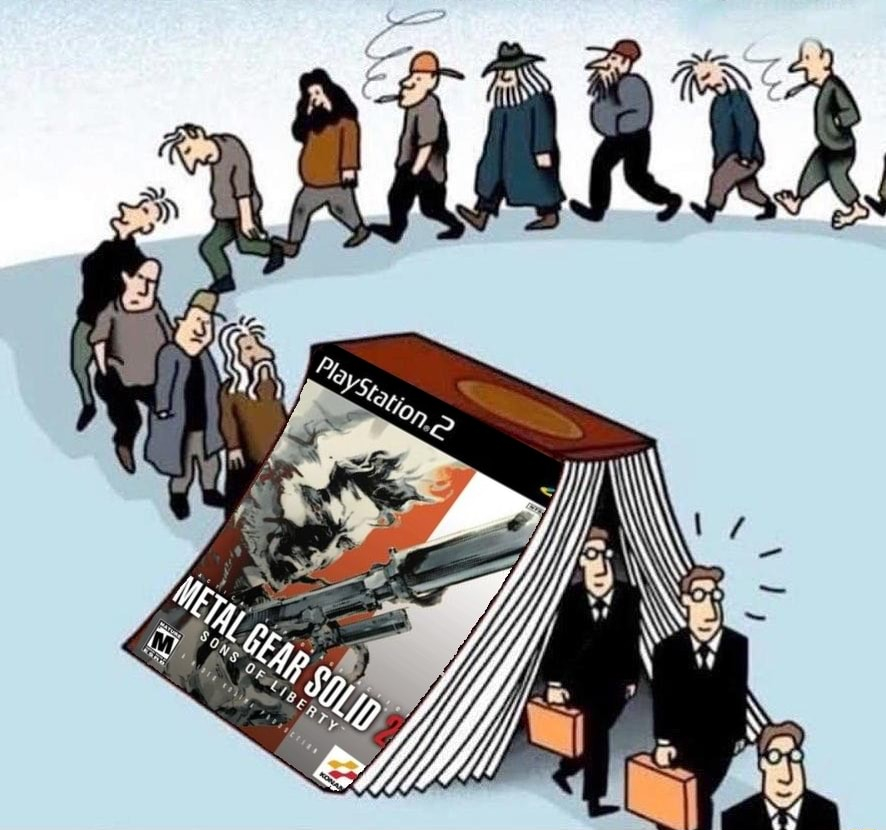
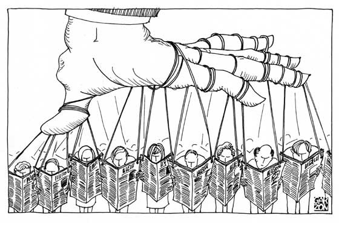

Temas tratados dentro del videojuego
Uno de los temas más importantes que se aborda en Metal Gear Solid 2 es el de la identidad y cómo puede ser moldeada y manipulada por fuerzas externas. El juego explora la idea de que la identidad no es algo fijo o inherentemente personal, sino que puede ser influenciada y manipulada por la tecnología y los medios de comunicación. Este tema se manifiesta en la historia del juego a través de la experiencia del personaje principal, Raiden, quien es sometido a una serie de manipulaciones y experimentos que alteran su percepción de sí mismo y su lugar en el mundo. A través de la narrativa del juego, se cuestiona la naturaleza de la identidad y cómo la tecnología y los medios pueden ser utilizados para moldearla y controlarla.
Otro tema importante que se aborda en Metal Gear Solid 2 es el de la manipulación mediática y la creación de una realidad alternativa por parte de los medios de comunicación y las personas en el poder. En el juego, el antagonista principal, Solidus Snake, busca utilizar los medios de comunicación para controlar y manipular a la sociedad a través de la difusión de información falsa y la creación de una realidad alternativa. El juego cuestiona la veracidad de la información que recibimos a través de los medios y la facilidad con la que puede ser manipulada y utilizada para perpetuar agendas ocultas. Además, se critica el papel de los medios de comunicación en la creación de la opinión pública y la influencia que tienen en la formación de nuestra percepción de la realidad.
